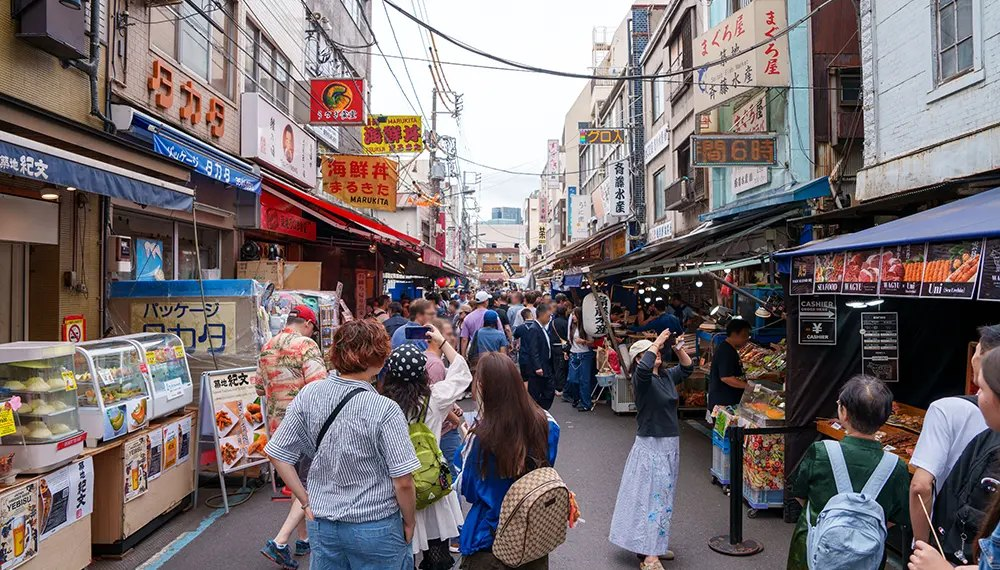
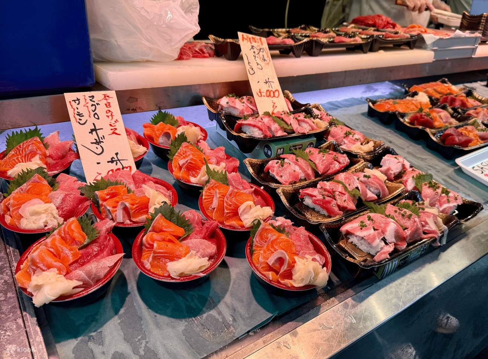
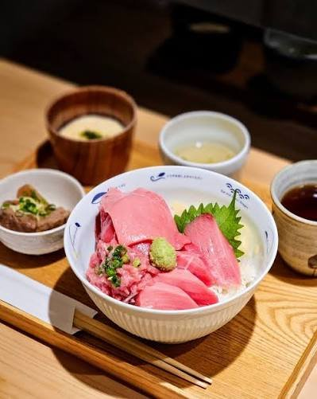
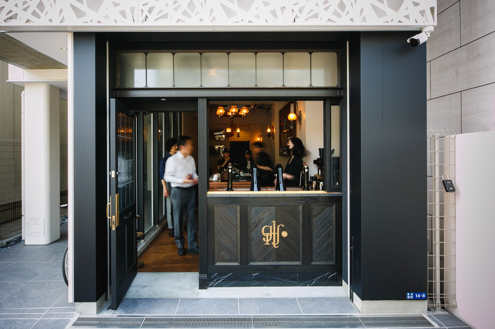
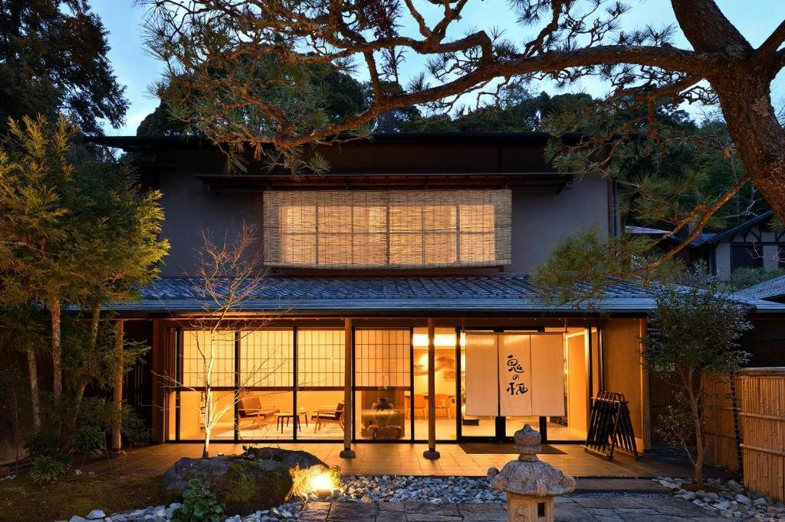
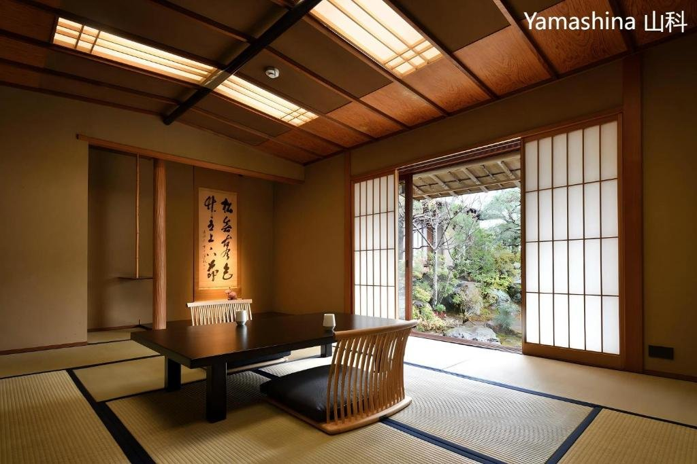
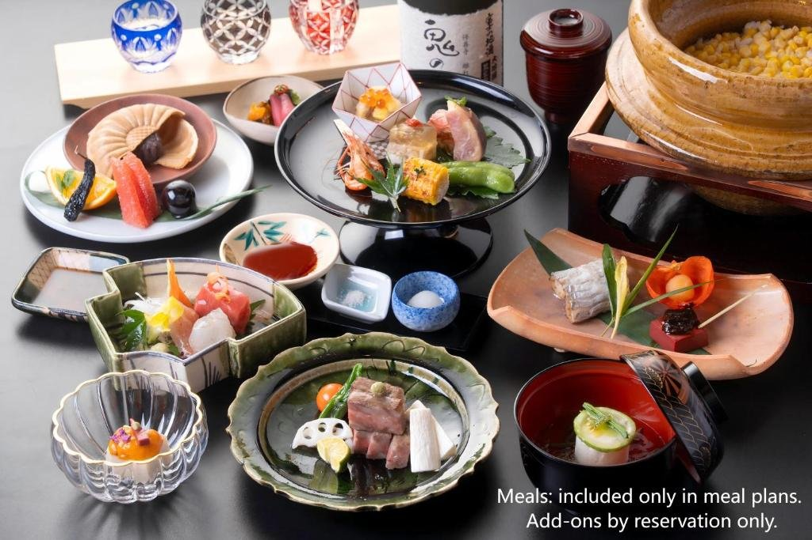

FIG. 02場外市場的海鮮丼攤
2018 年東京的批發魚市場搬到豐洲，但外圍這一圈「場外市場」留了下來。幾條窄巷裡擠著約 460 家店：一碗碗鮭魚鮪魚丼、炙燒鮪魚握壽司、現烤扇貝和海膽，還有玉子燒、昆布柴魚、日本菜刀和乾貨。
必吃的是玉子燒，老店「山長」1949 年開業，一串現煎的甜蛋捲拿在手上還是熱的。很多店中午過後就收，早上 9 點到 11 點最熱鬧。買了小吃請在店門口吃完，市場不太歡迎邊走邊吃。

FIG. 01修善寺・竹林小徑
11.17 二
上午在築地吃早餐、喝咖啡，中午取車往伊豆。下午到修善寺，傍晚逛溫泉街，晚上在旅館吃晚餐、泡湯。
預估氣溫 東京 → 修善寺・例年 11 月中旬
穿搭 長袖加輕外套。修善寺在山谷裡，傍晚逛溫泉街會降到 10 度左右，多帶一件。
飯店走到市場約 10 分鐘。
10:00 開店，沒有線上訂位。
也不一定要去排啦（但很好吃！）
海鮮丼、玉子燒、乾貨，在店門口吃。
大家坐著喝咖啡，Iris 和 Ryan 去取車。
Nippon Rent-A-Car 東銀座店，預約號 Z72424。
車程約 2–2.5 小時，中途在休息站停一次。
18:00 前入住。
竹林小徑、修禪寺、桂橋、獨鈷之湯。


FIG. 02場外市場的海鮮丼攤
2018 年東京的批發魚市場搬到豐洲，但外圍這一圈「場外市場」留了下來。幾條窄巷裡擠著約 460 家店：一碗碗鮭魚鮪魚丼、炙燒鮪魚握壽司、現烤扇貝和海膽，還有玉子燒、昆布柴魚、日本菜刀和乾貨。
必吃的是玉子燒，老店「山長」1949 年開業，一串現煎的甜蛋捲拿在手上還是熱的。很多店中午過後就收，早上 9 點到 11 點最熱鬧。買了小吃請在店門口吃完，市場不太歡迎邊走邊吃。

築地的鮪魚專門丼飯店，一碗裡鋪滿赤身、中腹和蔥花鮪魚泥，配一碗味噌湯，是旅程第一頓「很日本」的早餐。開店前排隊比較不用等。

東京人氣精品咖啡，主打淺焙單品手沖。黑色木門、吊燈和吧台像一間小酒吧，喝起來果香很明顯，不習慣酸味可以請店員推薦比較順口的豆子。

修善寺溫泉的名字就來自這座寺。相傳西元 807 年由弘法大師空海開創，溫泉街中央桂川裡的「獨鈷之湯」，傳說是空海用法器敲開岩石湧出的泉水，被視為伊豆最古老的溫泉，現在只供參觀。
從修禪寺走下來，沿著桂川有紅色的小橋、石板路和老旅館，十一月寺前的楓樹正紅，傍晚亮燈後整條街都是暖黃色。
桂川邊的一小段竹林步道，高高的竹子把天空圍成一條細縫，中間有一座圓形的竹台可以坐下休息。被稱為「伊豆的小京都」，傍晚石燈籠一盞盞亮起，竹葉沙沙作響，是溫泉街最好拍的地方。
十一月中旬，修善寺的楓葉正紅。
修善寺溫泉街



全名「修善寺 離れ宿 鬼の栖」，全館不到十間，每一間都是獨立的「離れ」（獨棟客房），藏在溫泉街旁的竹林裡。房間附有自己的日式小庭園和露天風呂，泡湯時只聽得到竹葉和流水聲，不用跟其他客人共用大浴場。
晚餐是會席料理，一道道用伊豆的海鮮和當季食材，配一杯在地的日本酒。走路幾分鐘就到溫泉街，吃飯前可以先去竹林小徑散步，吃完再回房泡湯。

秋日賞楓行 Day 2 / 6